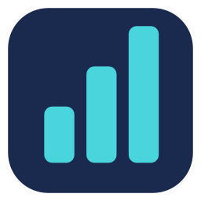

TokenBar를 처음 실행할 때는 폴더 접근 권한을 요청하지 않습니다. 메뉴 막대의 아이콘을 누르고 설정 → 로컬 기록 접근에서 제공자별로 macOS 파일 선택창을 열어 Codex의 ~/.codex, Claude Code의 ~/.claude 등 원하는 폴더를 직접 선택하세요. 숨김 폴더도 선택할 수 있으며, 선택한 폴더는 읽기 전용으로만 연결됩니다.
선택한 폴더의 읽기 전용 접근 권한은 이 Mac에서 유지되어 앱을 다시 실행해도 연결과 입력값이 보존됩니다. 더 이상 사용하지 않을 제공자는 설정 → 로컬 기록 접근에서 연결을 해제할 수 있습니다. TokenBar는 폴더에 쓰거나 제공자 설정을 변경하지 않습니다.
계정이나 폴더를 연결하지 않아도 작업예산 플래너를 사용할 수 있습니다. 총 예산, 사용량, 작업 수를 입력하면 남은 예산과 작업당 예산을 기기 안에서 계산합니다. 예를 들어 총 100,000, 사용 20,000, 작업 3개면 남은 예산은 80,000, 작업당 약 26,666이며 작업을 4개로 바꾸면 20,000입니다. 입력값은 앱을 다시 실행해도 보존됩니다.
제공자 폴더를 연결한 경우에는 오늘 측정한 토큰 사용량을 계획에 가져올 수 있습니다. Task Budget은 사용자가 세우는 작업예산으로, Codex·Claude Code 등의 구독 또는 제공자 한도와는 별개입니다.
토큰 수는 연결한 제공자 폴더에 남은 최근 세션 기록을 집계합니다. 한도 사용률은 토큰 수로 추정하지 않고, 제공자가 로컬 기록에 남긴 값만 표시합니다. Codex의 5시간 항목처럼 요금제에 없는 한도는 표시되지 않습니다. Claude의 5시간·주간 한도는 기존 Claude Code statusLine 연동이 .claude/token-bar-rate-limits.json 파일을 갱신하는 경우에만 나타납니다.
상세 화면 하단의 새로고침 아이콘을 누르거나 설정에서 자동 갱신 간격을 바꿀 수 있습니다. 기록과 계산은 기기 안에서만 처리됩니다. 자세한 내용은 개인정보처리방침을 확인하세요.
운영자: 더온(DEON) · 개인사업자 · 대표자 조승열
앱 지원 문의: s10cho.deon@gmail.com
GitHub 이슈로도 문의할 수 있습니다. 이슈는 공개될 수 있으므로 세션 기록이나 인증 정보를 첨부하지 마세요.